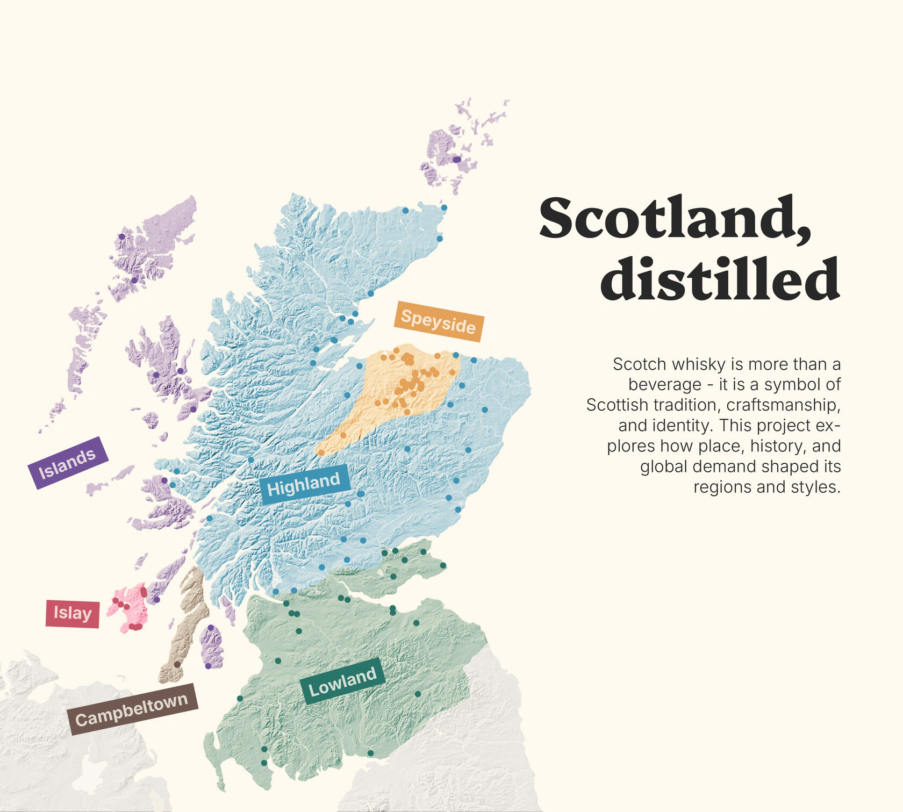
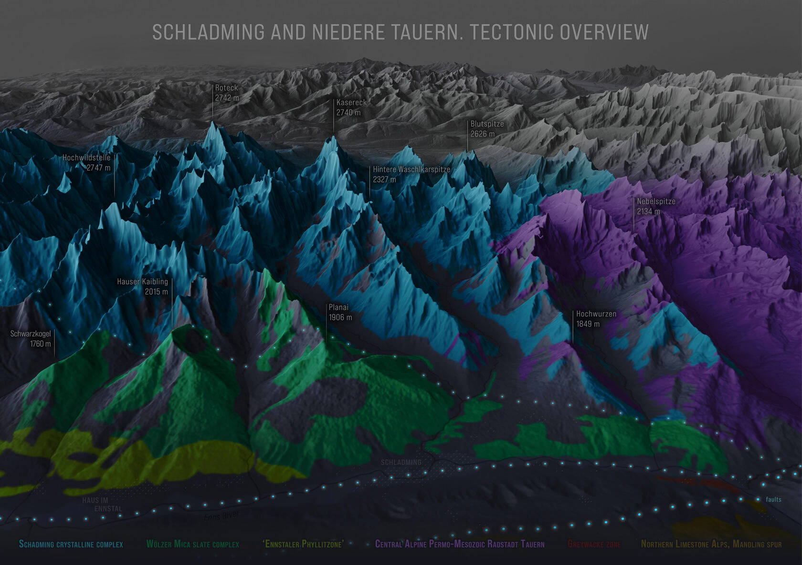
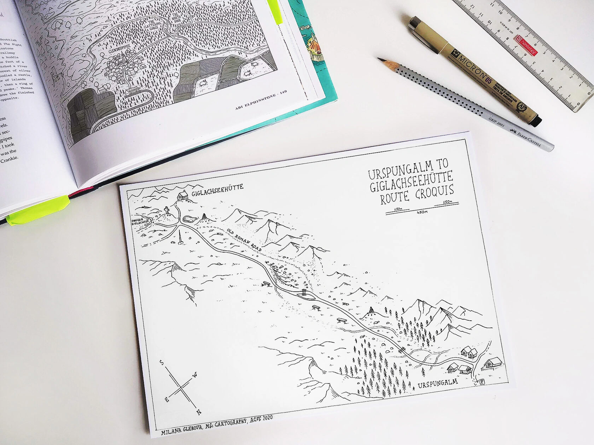
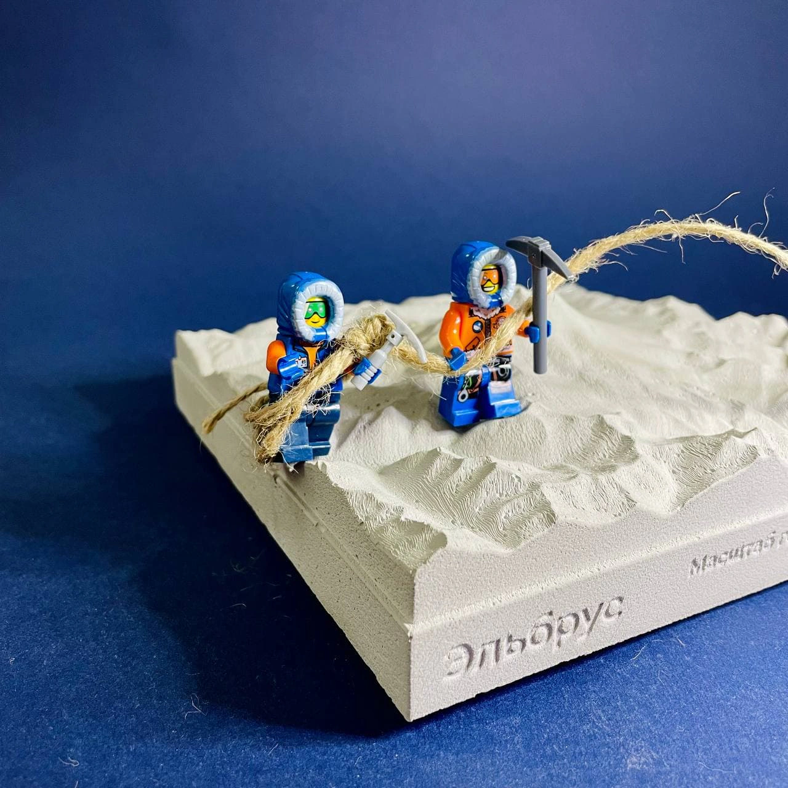
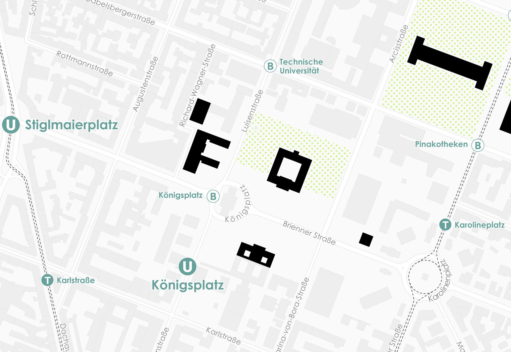
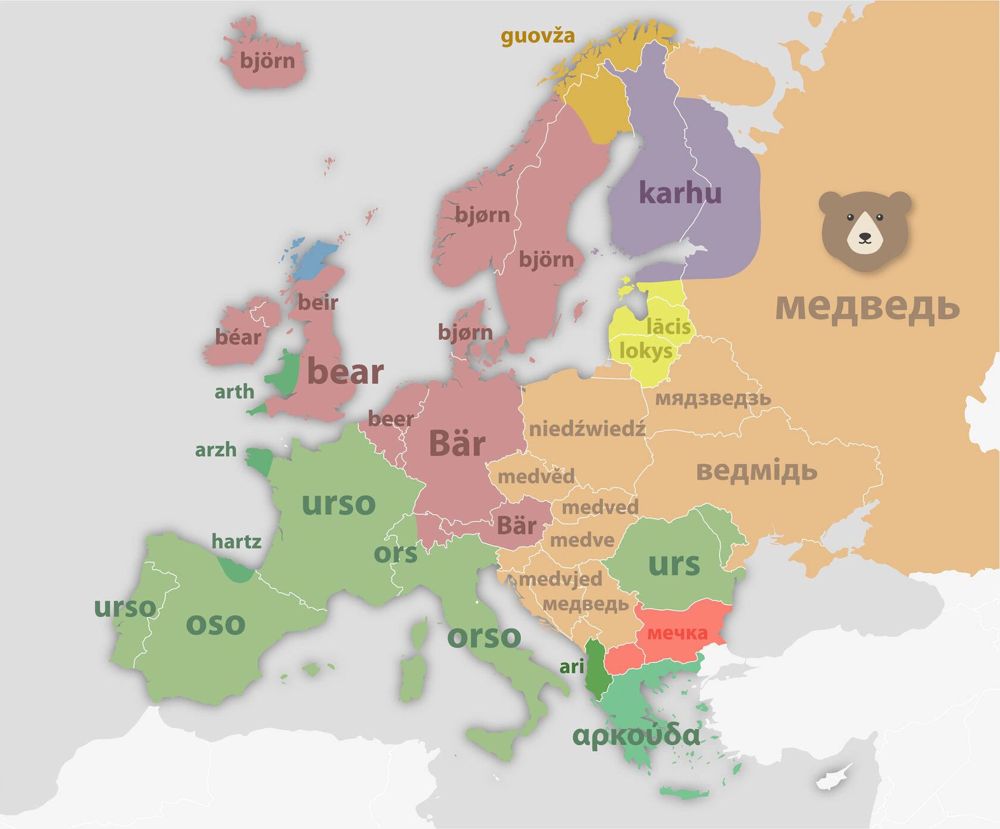
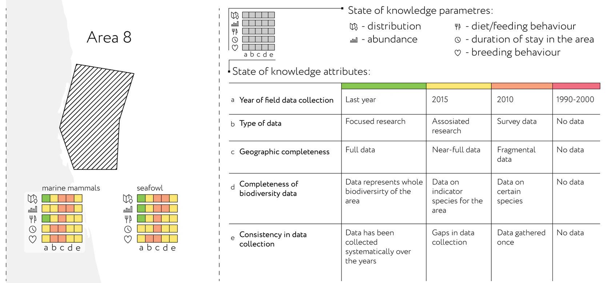
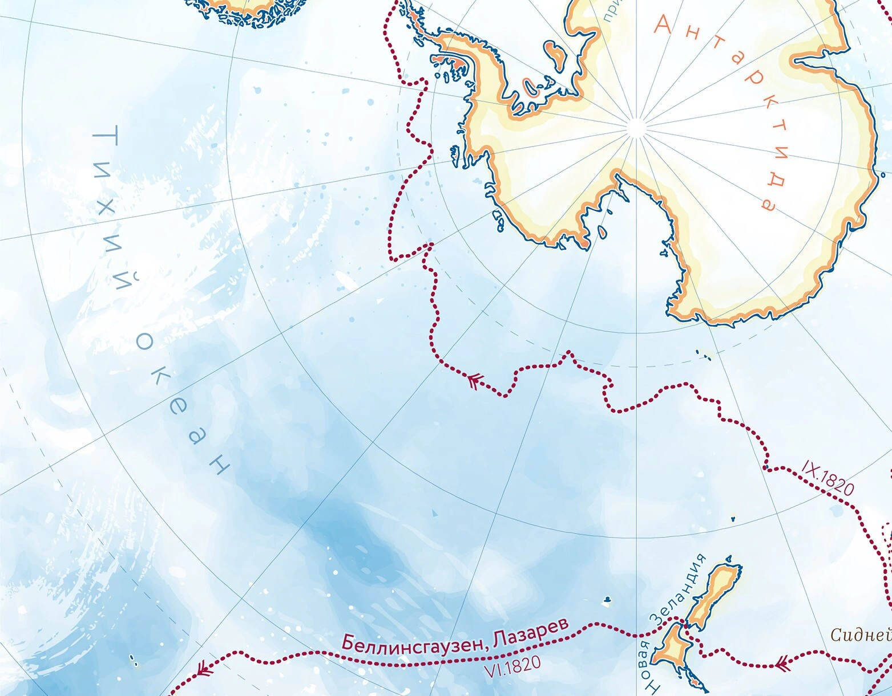
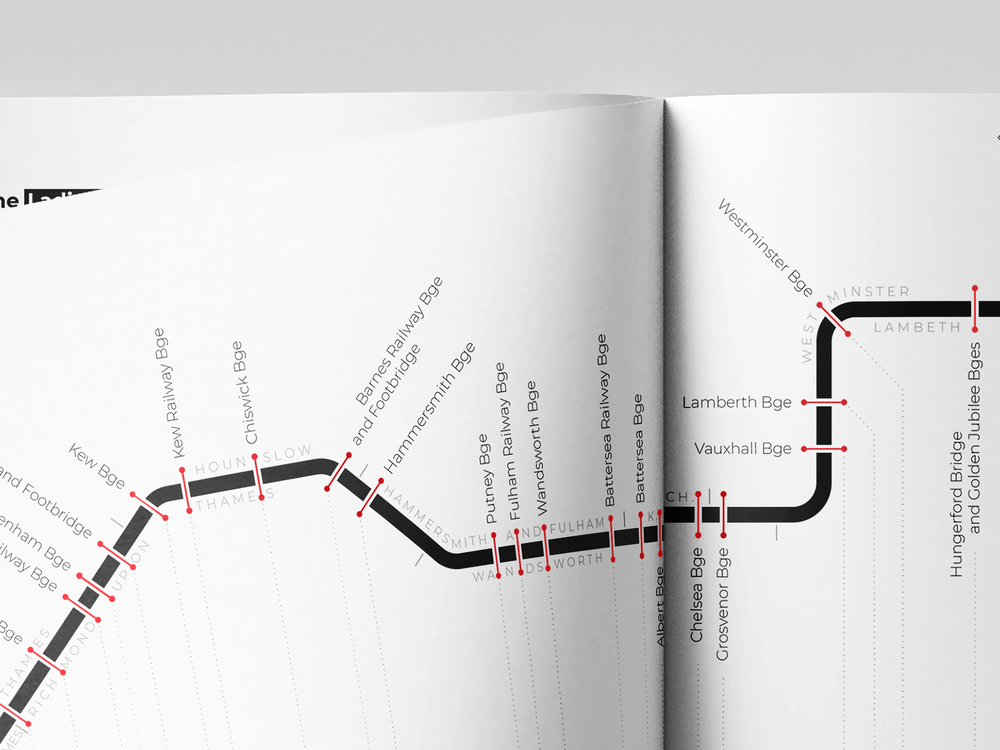

The Scotch Whisky Project
A set of maps and graphics created to highlight production patterns, regional differences, and industry structure. Built from fragmented public sources and reconstructed datasets.
This page features a collection of smaller cartographic projects I've worked on. Each piece may not warrant a full story, but for me they seem to be interesting or enjoyable in their own way:

A set of maps and graphics created to highlight production patterns, regional differences, and industry structure. Built from fragmented public sources and reconstructed datasets.

This panorama provides an informal representation of the general tectonic structure in part of the Schladming massif in Eastern Austria. Created during the Alpine Cartography Field School 2020, part of the Cartography Master Program.

This hand-drawn sketch map was created using field measurements. My fellow Cartography Master’s students and I measured distances and recorded directions, after which I plotted the map. It focuses on the terrain of the northern Steirische Kalkspitze in the Schladminger Tauern, completed during the Alpine Cartography Field School 2020.

Using open-source elevation data, I designed a 3D model of Mount Elbrus in Blender, accurately representing both vertical and horizontal scales. Later, in a workshop, a team converted the 3D mesh into a physical gypsum concrete model, sized 170 x 170 x 50 mm. The concept was developed by Nikita Slavin, founder of the Kon-Tiki Publishers, with the model produced at julys.lab.

A pedestrian map of Munich’s museum quarter. Just a homework assignment for the GIS course at TU Wien, but I think it turned out quite well.

As a freelancer, I created presentations for an online course on "Regional Studies and Urban Geography" from the Higher School of Economics in Moscow. The presentations were largely composed of maps that accompanied the professor’s lectures, with each session focused on a different continent.

For a work project, I designed a visualization to showcase the level of research on marine mammals and birds across different regions of the Arctic. The graphic clearly highlights the differences in research coverage, while also offering detailed information for those interested in a deeper look.

While working at the Marine Research Center, I occasionally illustrated the routes of iconic expeditions, which were posted on the company’s social media on commemorative dates. I loved the opportunity to experiment creatively and have some cartographic fun, stepping away from the usual strict visualizations.

This is a schematic map of the bridges crossing the Thames, included as part of a booklet I created for the Geo-Media Technology course in the Cartography Master Program at TU Wien.